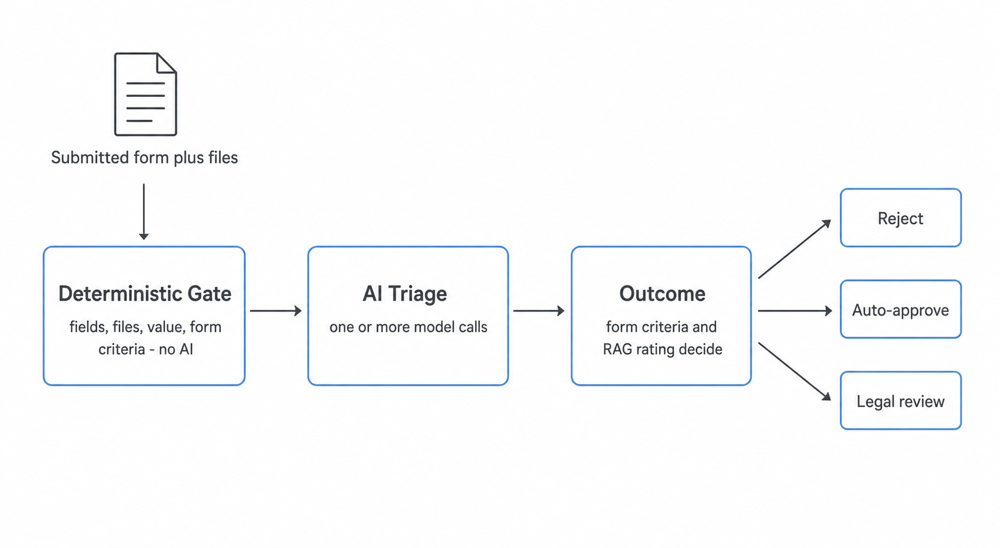
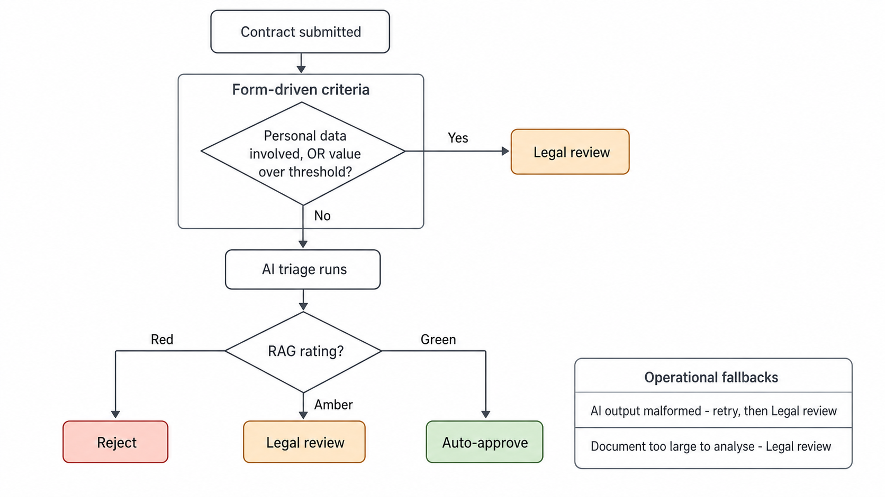
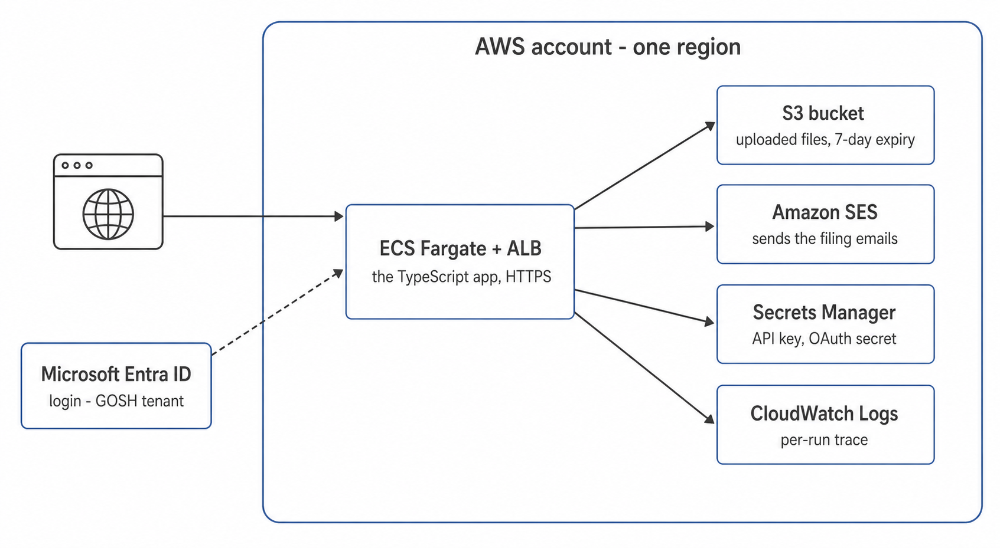
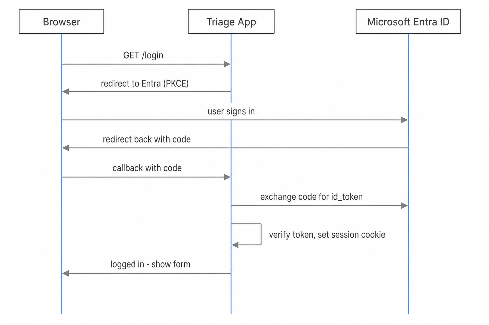
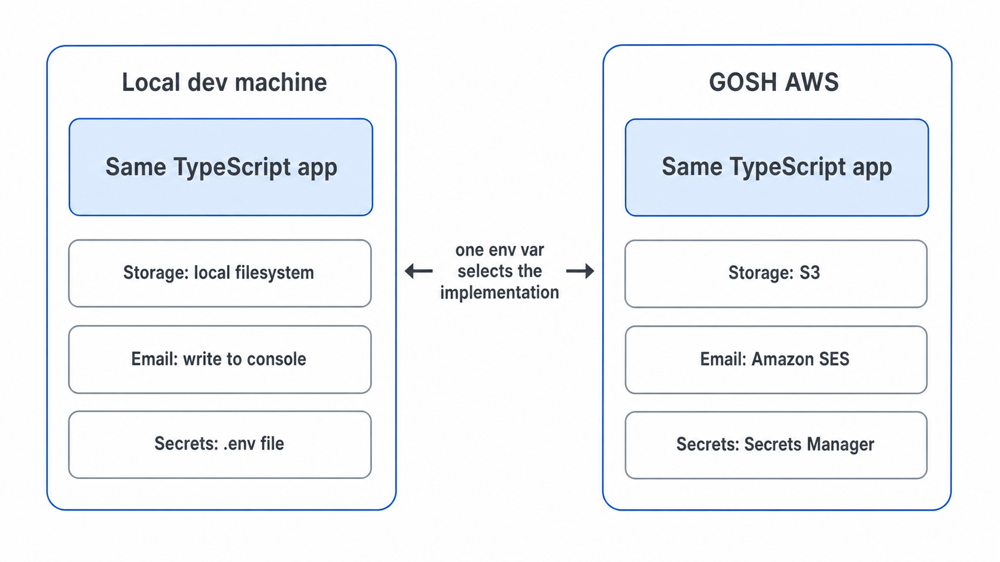

Architecture design - May 2026
Today every third-party contract at GOSH goes through the Legal team. That makes Matthew Martinez and Emma Arbuthnot a bottleneck - overloaded, and holding up the rest of the charity. The idea, worked out with Matthew: for low-value, low-risk contracts that meet a defined set of criteria, AI could approve them automatically - so only the contracts that genuinely need a lawyer reach one.
A first version exists as a custom GPT, but its workflow is clunky - drag files in, read the reply, copy it into an email, re-attach the contract, send. This web app puts the same triage into practice and removes the app-switching. Richard Grove has approved it as an initial exploration, and as a way for GOSH to build practice in using AI inside real workflows.
Two decks: this is the architecture. The companion deck is the software implementation.


The outcome is driven by criteria, not decided in a separate step after the AI.
Green is a checklist, not a vibe - no material deviation from the GOSH templates, value and term consistent with the form, acceptable key clauses, every file cleanly extracted. That is what makes a separate form-versus-document re-check unnecessary.
Fallbacks: malformed AI output retries, then goes to Legal review; a document too large to analyse goes to Legal review.
| Outcome | The user sees | Email to the triage inbox |
|---|---|---|
| Reject | Rejected, with wording they can send the provider to ask for changes | Type A - reject record |
| Auto-approve | Approved for this spend | Type B - auto-approval filing |
| Legal review | Sent to Legal - they will be in touch | Type C - flagged for Matthew / Emma, with a reviewer guide |
The application does not require a database to record outcomes. The result of each
triage is an email sent to a pre-configured inbox - for example
contractreview@gosh.org. This inbox is dedicated to this purpose, and
the email subject line allows sorting. The app's own copy of the file is deleted
within a week, so each email is a self-contained
filing bundle.

One AWS account, one region:
Microsoft Entra ID sits outside AWS, in GOSH's own tenant.

/login. The app redirects to Microsoft Entra,
using
PKCE.This uses the maintained openid-client library - the app does not hand-write token crypto. All form posts are CSRF-protected.
The AI step may make one or more model calls. It is given the five GOSH template documents as plain text, a list of the relevant UK legislation, and - found at run time - current UK regulatory sources, via an agentic web search.
GPT-5 does the triage reasoning. GPT-5 Mini runs the agentic search loop. The search is guided on what counts as a legitimate UK source - ICO, GOV.UK, the Charity Commission, the Fundraising Regulator.
It never receives contract text - it searches generic UK-law questions only. The source list is enforced in code. And it can only raise risk, never lower it: a failed search forces Legal review, it never enables an auto-approval.
This is the OpenAI implementation. If the project moves to Anthropic, or later abstracts these details to be provider-agnostic, the specifics change - but the app reaches the model through one interface either way (next slide).
The MVP at present is designed around OpenAI, but we may change this for Anthropic.
The model call stays inside GOSH's AWS account and region. One cloud, one data-residency story, one set of compliance paperwork. Means changing the model family the GPT prompt was tuned against.
Keeps the exact OpenAI models the GPT already works well with, with enterprise data controls. But it reintroduces an Azure dependency, just as GOSH is moving to AWS.

The identical TypeScript app runs on a developer's laptop and on GOSH's AWS. Three small modules each pick their implementation from one environment variable:
.env file on
a laptop.What this first version explicitly does not do: